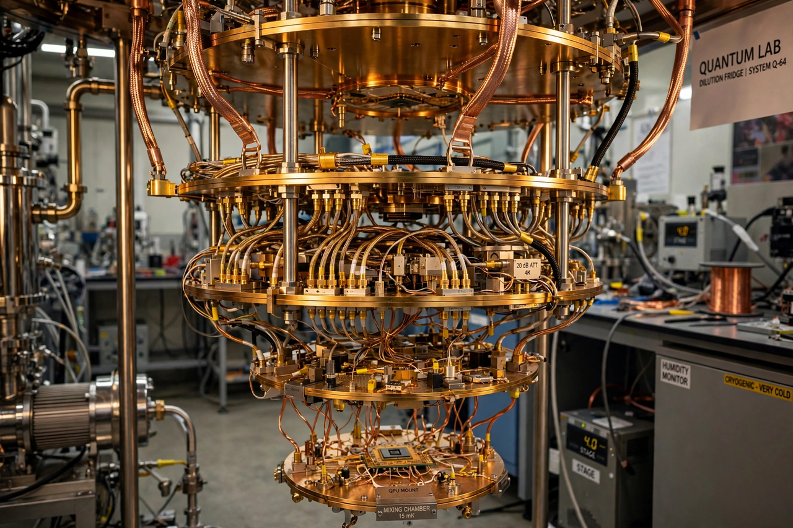

Quantum computing

[Image: A gold chandelier-like quantum computer cryostat]
Quantum computing is a type of computation using quantum-mechanical phenomena — superposition, entanglement, and interference — to process information in quantum bits (qubits), which can exist in combinations of states impossible for classical bits.
Richard Feynman proposed quantum simulation in 1981; David Deutsch described a universal quantum computer in 1985. Peter Shor's 1994 factoring algorithm showed quantum computers could break widely used public-key cryptography, spurring investment; Lov Grover's algorithm (1996) speeds unstructured search.
Hardware and challenges
Qubits are realised in superconducting circuits, trapped ions, photonics, and other platforms; they are extremely fragile, requiring near-absolute-zero temperatures and error correction that may need thousands of physical qubits per logical qubit. Companies and labs (IBM, Google, IonQ, universities) compete on qubit count and quality; Google claimed 'quantum supremacy' in 2019 for a specific sampling task.
Current devices are NISQ (noisy intermediate-scale quantum): useful for experiments, not yet for large practical problems.
Applications
Proposed uses include quantum chemistry and materials simulation, optimisation, machine learning, and cryptanalysis; post-quantum cryptography standards were published by NIST in 2024 to prepare for capable machines.